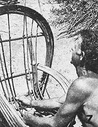

Ernest J. Lewis of Oroville, California earns $200 per week making attractive and durable-furniture from an abundant natural material. And, he does it without expensive tools.
If you like to work with your hands and you've always wanted your own backyard or garage business-but you lack "seed money" to invest in such an operation-why not build and sell willow chairs?
I earn a couple hundred dollars weekly making these wonderfully old?timey pieces of furniture, and there's no reason why you can't do the same! All you need are [1] a few simple hand tools, [2] the desire to make a quality item, and [3] the knowledge of how to do it. On the assumption that you already have the first two requisites, I'll give you the third right now.
When the plant's buds begin to swell and leaf tips start to appear on its branches-in other words, when the sap starts to flow-that's the time to go after willow. (Any variety is suitable.) Here in northern California, where the winters are relatively mild, I'm able to begin my harvest in early February.
You'll find willows in abundance wherever there's water (along riverbanks, around lakes and ponds, etc.) and, quite often, along road rights-of-way. (State and county highway departments seldom object to the trimming back of roadside willows, since that's usually one of their unending chores. It might not be a bad idea, though, to ask for permission before you start hacking away.)
Take along either a pruning saw or a carpenter's saw (pruning shears also come in handy on your forays). And plan on cleaning up your on-site trimmings . . . unless, of course, you take your collection of branches home untrimmed.
Note: If you have a goat?as we do?you won't have any cleanup problems at home . . . but beware: Goats do have a taste for willow bark and will devour your unseasoned chairs with gusto if given the chance! Fortunately, our caprine friends don't seem to care much for seasoned chairs.
Here?assuming you want enough materials for just one medium-sized chair?is what you should look for, once you've found a good patch of willow:
[1] LEG AND FRAME STOCK. About 50 feet of 1-1/2"diameter branches. (The diameter can vary plus or minus 1/2", but remember to use the heaviest material for the chair's legs.)
[2] ARM WILLOWS. Here you'll want at least ten switches?four to five feet long and 3/4" thick-with as few side branches as possible. (Since these willows may not all bend to the same exact curvature, it wouldn't hurt to have a few extras.)
[3] HEADREST MATERIALS. Five 3/4" branches, eight to nine feet long. (Limbs of this length will most likely taper from about 1" in diameter at one end to 1/2" at the other, but that's OK.)
[4] BACKREST WILLOWS. Fifteen 1/2" switches, three feet long. These'll be the easiest of all to find.
The only tools you'll need for the construction of a first-rate willow chair (other than the saw and shears mentioned above) are a claw hammer, carving knife, and tape measure.
You'll also want a good assortment of box nails (which are slimmer than commons) on hand, in sizes ranging from eight?penny down to small shingle nails.
No matter how large or how small a willow chair you build, its main structural components will always be in the same proportions. That is: the rear legs (and the two large, horizontal backrest support members) will be twice the length of the front legs, while all rungs, braces, and crosspieces will be halfway between the two in length. The actual dimensions?for three chair sizes?look like this:
A king-size chair has two 18"-long front legs, four 36"?long rear legs and backrest supports, and fourteen 27"-long framing members.
A medium chair has two 14" legs, four 28" pieces, and fourteen 21" members.
A miniature chair has two 10" legs, four 20" pieces, and fourteen 15" members.
Given these dimensions, a king-size chair's headrest will come to about the chin of a tall man . . . while the miniature model will?at its apex?reach only to the middle of the same fellow's thigh. (Both are more difficult to build than the standard-sized version, due to the scarcity of the extra-long willows needed for the king-size chair, and due to the tight arcs through which the willows are bent for the miniature chair.)
The important thing, if you stick to the above proportions, is that your "objets d'art" will have a pleasant, balanced look about them. And 'that chairs of all three sizes will show an obvious family resemblance.
Before you begin, cut all your pieces of stock to length (Photo 2). Use the first measured-and-cut piece of each length as a pattern for all the others in that category. (This'll help reduce measuring errors.) Also, carefully trim the ends of each piece with your knife?as I've done in Photo 3?to keep the bark from splitting during the steps that follow.
All right. Start by making left and right chair halves separately, flat on the ground. Lay one front and one rear leg down so that they're almost parallel (you do want to give the back of the chair some rearward slant) . . . then lay two rungs across the legs at right angles (Photo 3), allowing 1-1/2" of overhang. (The lower of the two rungs should be about three inches from the ends of the legs, while the higher one should be about an inch and a half from the top of the shorter leg.) Nail the crosspieces to the legs.
Note: Throughout construction, choose your nails so that they'll just reach through the two pieces of willow you're joining, since it's nearly impossible to clinch an overlong nail without bruising the wood's surface.
Now make another, complementary chair half as described above . . . but be sure it is complementary. I've been known to make two right sides (or two lefts) by accident. It's easier to do than you think!
When both halves are finished, stand them up side by side?rungs to the outside?about 18" apart (for a medium?size chair), then connect the two assemblies with a crossmember at a spot just above the highest rungs at the front of the chair. (You'll need a third arm or an assistant for this. See Photo 4.) Also place crosspieces [1] just beneath the front overhang of the topmost rungs, and [2] just above the front overhang of the bottommost rungs. (To avoid splitting the wood, always nail these crossmembers to the legs. . . not to the rungs.)
Now?moving around to the back of the chair?nail one crosspiece to the open side of the frame atop the lower set of rungs, and another crosspiece atop the upper set of rungs. When you're done, there ought to be three parallel crossmembers at the front of the frame, two at the rear, and a pair of rungs on either side.
To complete the frame, nail a double?long piece of stock?28", in the case of a medium?size chair-across the back of the chair, midway up the backrest (and do note the extra cut-to-length spacer that I like to tack to the front of this piece between the uprights of the chair's back). Then place an identical piece across the top of the two rear uprights. These crossmembers have considerable overhang (5" to 6" on either side of the chair) so they can accommodate the arm and headrest willows later on.
The next order of business is to add braces to the somewhat rickety chair frame.
First, wobble the frame around until it sits squarely and evenly on all four legs. Then carefully lay it on its side and place a brace between a spot high on the inside of the front leg and a spot low on the inside of the rear leg. (In other words, nail the stiffener to the inside?not the outside?of the chair's frame.)
Next, lay the frame on its opposite side and add another brace in the manner just described. (Further bracing is unnecessary, since the arms and headrest will lend additional stiffness in other directions.)
Now's a good time to check the security of all framing members and add extra nails where needed. Grip and twist each run or crosspiece, and?if there's any movement?add another nail.
So far, you will have used 11 of the 14 mid-length framing members you started with. The remaining three 21" pieces?which will be used as seat supports?are best left off until the arms and headrest are finished.
When you're ready to begin work on the arms, find a willow about as big around as a man's thumb and four to five feet long, trim it to remove any side branches or enlarged buds, then grab the piece by each end and bend it around into a sharp curve to check for weak and/or stiff parts. If the curve is uniform, you can consider the rod usable.
Next, stand your chair upright, kneel in front of it, and tuck the larger end of the willow behind the middle of the chair's lowest front crossmember. Bend the switch back against the uppermost front crosspiece so that it touches this crossmember four inches from the corner of the chair, then bring the small end of the bowed rod down to the large backrest support (as I'm doing on the chair's left side in Photo 5). When the willow has the shape you want, nail it down.
Before you add another rod to that side, repeat the above procedure on the opposite side of the chair. (It's important to alternate from side to side as you add willows, since the tension created by one completed arm would-unless balanced by equal tension from the other arm?cause the entire frame to become distorted.)
OK. Now add a second willow to one of the arms, outside the first willow, and nail it to the first one every few inches so that both assume the same shape. (If there's any doubt about nail length, hammer toward the outside of the arm. That way, the third willow will cover any fastener points that protrude through the second one.) Keep adding switches?first to one side, then the other?until each arm contains five rods altogether. That's all there is to it!
After the arms are finished, you'll be ready to begin work on the headrest. For this, you'll need your longest?and best-willows.
Start by bending an eight nine-foot-long rod into a circle and tucking its ends down inside the uppermost side rungs of the seat frame (Photo 6). Bring the ends down until the long rod touches the chair's arms and lies against the horns of the top-mounted backrest support piece. (The willow should lock into place, but may tend to spring loose.) Now nail the long, arched branch to [1] the horns of the backrest support, [2] the outside of each arm, and [3] the inside of the seat frame.
Next, lay another?longer?headrest willow down next to the first one. Position it (and all following pieces) so that the finished headrest will slant forward slightly at its apex (as shown in Photo 7). Finally, nail this branch to the outside of each arm, the inside of the seat frame, and?every six inches or so?to the first headrest willow. Repeat this procedure with three more long, slender rods (each one slightly longer than the one before) . . . and you're ready to go on to the seat.
This is when the beauty of the finished chair really starts to show.
Now's a good time to take care of those three leftover mid?length framing members we spoke of earlier. (See the end of the section on Bracing.) Nail two of these pieces across the top of the seat?as shown in Fig. 1 (framing members 8 and 9)?and place the third one a few inches up on the seat back. To find the optimum location for this third crosspiece, run a small-1/2" X 3'-willow from the front of the seat to the back, and up the backrest . . . then position the crossmember beneath the bend in the seat willow so that it just touches the seat back AND the small willow. Mark the spot, and nail the crosspiece there (see Fig. 1, framing member number 10).
All you need to do now is install the seat willows, which run from the front of the seat to the back, and up behind the oval headrest (Photo 7). Space these willows no more than an inch apart, and attach them to the seat frame with small nails. Afterwards, you may want either to [1] cut the willows off flush with the seat's uppermost horizontal framing member, or [2] let them run on up to the arched headrest and fan 'em out (or, perhaps, bend them into curlicues).
And?oh yes?sit down and take a rest. You've just made your first willow chair!
When your first chair is finished, probably every member of the family will feel that he or she needs one. And your friends (if they're anything like mine) will try to wheel and deal you out of your finished product, thinking it's more difficult to build than it really is.
Moreover, total strangers will offer you money for your handiwork. In my case, hardly a week goes by that I don't sell $200 worth of willow goods (including not just chairs but footstools, settees, and other items). Once, I sold eight $12 chairs and a $40 settee in only three hours! (All I did was set up a display along the roadside just outside the unincorporated town of Paradise, California.) And?not long ago?I made a 57-day tour of the United States . . . financed entirely by the sale-in flea markets and along roadsides-of handmade willow furniture.
Besides that, if you're into barter, you'll have no trouble trading willow chairs for items of equal?or better?value. (That's how I got my goat, and the jet pump for my shallow irrigation well!)
Whether you seek the independence and personal satisfaction that come from being self?employed . . . or you just enjoy creating beautiful, useful things with your hands?or both?you just may find what you're looking for in willow chairs. I know I have!
|
PHOTOS BY BYRON BOOTS |
|
|
|
|
|
|
|
|
|
 |